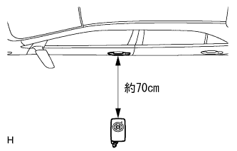
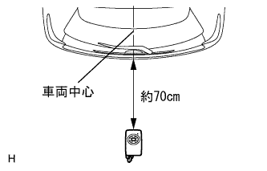

Smart Entry & Start System (Smart Entry) Smart Lock and Unlock Do Not Operate from Any Door (Wireless Function Operates) |
| Step 1 | Inspect Power Door Lock System |
Check that the door locks operate lock <-> unlock when the door control switch of the power window regulator master switch assembly is operated.
| Result | Proceed to |
|---|---|
| When the door locks operate normally | A |
| When the door locks do not operate normally | B |
|
| ||||
| A | |
| Step 2 | Read TaSCAN Data |
ECU Data Monitor
Using SST (TaSCAN), perform data monitoring of the certification ECU.
| Item Name [Symbol] | Item Description/Display Range | Standard Value | Remarks |
|---|---|---|---|
| Smart Cancel [SCAN] | Smart cancel function setting status Display range: OFF-ON | OFF: Smart cancel function not set ON: Smart cancel function set | - |
| Result | Proceed to |
|---|---|
| Cancel not set | A |
| Cancel set | B |
|
| ||||
| A | |
| Step 3 | Radio Wave Environment Check |
Move the electrical key transmitter as follows and check the operation.
Hold the electronic key close to the driver side door outside handle and check the smart lock/unlock operation from the driver side door.
Hold the electrical key transmitter close to the front passenger side door outside handle and check the smart lock <-> unlock operation from the front passenger side door.
Hold the electrical key transmitter close to the electrical key antenna (inside the rear bumper) and check the smart lock <-> unlock operation from the back door.
Hold the electrical key transmitter close to the door control receiver and check the smart lock/unlock operation from the back door.
| Result | Proceed to |
|---|---|
| Does not operate normally | A |
| Operates normally | B |
|
| ||||
| A | |
| Step 4 | TaSCAN Electronic Key Diagnosis Mode Inspection |
 |
Diagnosis Mode Inspection (Driver Side Outside Antenna)
Using SST (TaSCAN), select "Body" -> "Certification" -> "Electronic Key Diag Mode" -> "D Seat Transmission -> Interior Tuner".
Check that the wireless door lock buzzer sounds (beep, beep...) when the electrical key transmitter is held at the same height as the driver side door outside handle and approximately 70cm away from it.
 |
Diagnosis Mode Inspection (Front Passenger Side Outside Antenna)
Using SST (TaSCAN), select "Body" -> "Certification" -> "Electronic Key Diag Mode" -> "P Seat Transmission -> Interior Tuner".
Check that the wireless door lock buzzer sounds (beep, beep...) when the electrical key transmitter is held at the same height as the front passenger side door outside handle and approximately 70cm away from it.
 |
Diagnosis Mode Inspection (Front Interior Antenna)
Using SST (TaSCAN), select "Diagnosis" -> "Body" -> "Certification" -> "Electronic Key Diag Mode" -> "Fr Seat Transmission -> Interior Tuner".
Check that the wireless door lock buzzer sounds (beep, beep...) when the electrical key transmitter is placed on the driver or front passenger seat cushion.
 |
Diagnosis Mode Inspection (Rear Interior Antenna)
Using SST (TaSCAN), select "Diagnosis" -> "Body" -> "Certification" -> "Electronic Key Diag Mode" -> "Rr Seat Transmission -> Interior Tuner".
Check that the wireless door lock buzzer sounds (beep [continuous]) when the electrical key transmitter is placed on the rear seat cushion.
 |
Diagnosis Mode Inspection (Luggage Compartment Outside Antenna)
Using SST (TaSCAN), select "Body" -> "Certification" -> "Electronic Key Diag Mode" -> "Back Door Outside Transmission -> Interior Tuner".
Check that the wireless door lock buzzer sounds (beep, beep...) when the electrical key transmitter is held at the center of the rear end of the vehicle, at the same height as the top of the rear bumper and approximately 70cm away from it.
| Result | Proceed to |
|---|---|
| When diagnosis mode inspection cannot be performed at all | A |
| When diagnosis mode inspection cannot be performed for some (each seat door) | B |
| When diagnosis mode inspection cannot be performed for some (interior) | C |
| When diagnosis mode inspection can be performed | D |
|
| ||||
|
| ||||
|
| ||||
| A | |
| Step 5 | Replace Electrical Key Transmitter Sub-assembly (Electronic Key) |
Replace the electrical key transmitter. (see)
| NEXT | |
| Step 6 | Identification Code Registration |
Refer to the immobiliser registration procedure in the reference section and perform additional key ID registration.
| NEXT | |
| Step 7 | Operation Check |
Check the door lock operation using the smart function.
|
| ||||
| OK | ||
| ||